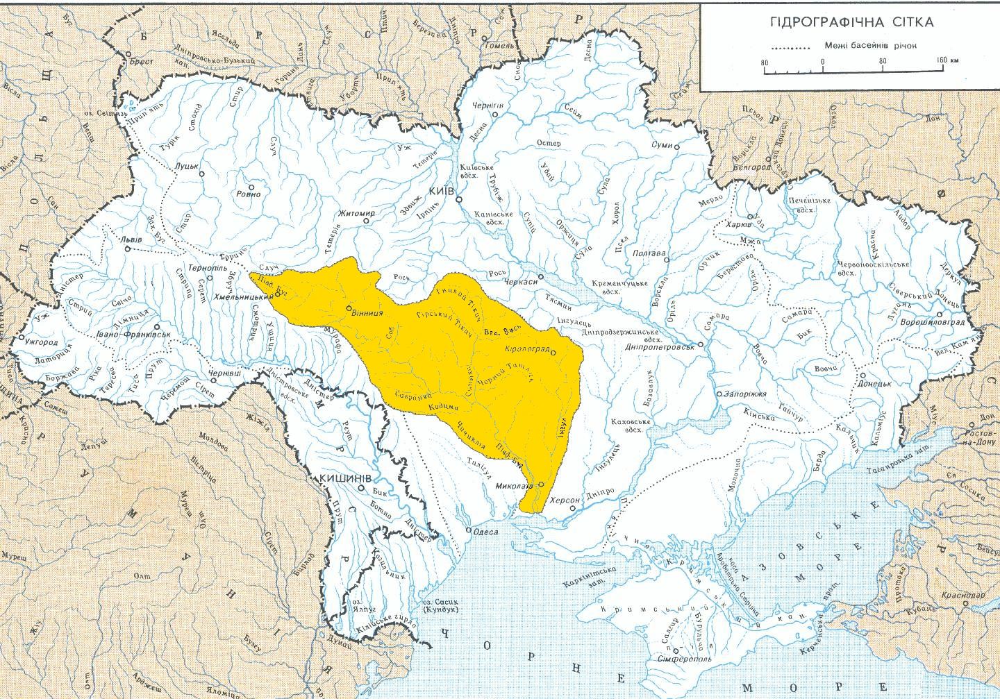

Історичні назви: давньогр. ‛Ύπανις (Гіпаніс); лат. Bagossola; тюрк. Ак-су (Біла річка);
старослов. Бог;
пол. Boh. Французький картограф Г. Л. де Боплан на карті 17 ст. позначив
річку — Boh Ruthenian (укр. Бог
Руський). У російських джерелах 19 ст. — Буг Южный
(Энциклопедический словарь Брокгауза и Ефрона, 1891).
Характеристика
Витік. Гирло
Бере початок на Волино-Подільській височині поблизу с. Холодець Хмельницького району Хмельницької
області.
Впадає в Бузький лиман в районі м. Миколаєва, який разом із Дніпровським лиманом утворюють
Дніпровсько-Бузький лиман Чорного моря.
Протяжність
Південний Буг є найбільшою річкою, басейн якої повністю розташований в межах України.
Довжина річки — 806 км, площа басейну — 63,7 тис. км².
Напрям і характер течії
Басейн Південного Бугу розташований у межах трьох геоструктурних районів, що увиразнюється в гідрографічних
особливостях річки. Верхня частина басейну знаходиться на Волино-Подільській височині, середня — в межах
Придніпровської височини, нижня течія належить до Причорноморської низовини.
У верхів'ї (до гирла р. Іква поблизу с. Нова Синявка Хмельницького району Хмельницької області) Південний
Буг тече по відкритій заболоченій місцевості в низьких берегах і має характер рівнинної річки: долина
шириною 600–1 200 м, середній ухил — 0,37 м/км.
У середній течії на відтинку від гирла Ікви до м. Первомайська Миколаївської області Південний Буг
знаходиться в глибокій долині, береги підвищуються, долина звужується до 200–600 м, середній ухил 0,46 м/км.
У місцях, де на поверхню виходять кристалічні породи (граніти, гнейси), долини Південного Бугу та його
приток вузькі, з крутими схилами, в руслі річки є пороги, а також перекати, бистрини (в районі с. Печера
Тульчинського району Вінницької області). На ділянках, де граніти залягають глибше (перекриті товщею
осадових гірських порід), долина річки стає ширшою, швидкість течії уповільнюється. Від м. Первомайська до
смт Олександрівки Вознесенського району Миколаївської області протягом понад 70 км береги Південного Бугу
високі (до 90 м), майже всюди круті, скелясті, русло вузьке, порожисте. Найбільші пороги — Мигійські,
Богданівські, Бузький Гард, біля смт Олександрівки. Основні пороги на Південному Бузі зосереджені на ділянці
від м. Вінниці до смт Олександрівки. Середній ухил 0,92 м/км.
У нижній течії (нижче смт Олександрівки) у межах Причорноморської низовини долина і русло Південного Бугу
значно розширюються. Біля м. Миколаєва ширина русла досягає 2 км, течія практично припиняється. Нижче гирла
р. Інгул (ліва притока) починається Бузький лиман, який має форму естуарія. Далі Бузький лиман з’єднується з
Дніпровським лиманом і утворюється Дніпровсько-Бузький лиман Чорного моря.
Тип живлення
Тип живлення — дощове і снігове.
Водний режим. Водність
Режим рівнів річки характеризується чітко вираженою весняною повінню, низькою літньою меженню, яка іноді
переривається під час проходження дощових паводків, та осінньо-зимовими підйомами води.
У пониззі річки відчуваються припливні явища (рівень води в Південному Бузі в районі м. Миколаєва може
підніматися на 40 см). Вплив припливу поширюється до м. Нова Одеса Миколаївської області.
Льодостав на річці триває з кінця листопада — грудня до лютого, скресає в середині березня; льодовий режим
не постійний, часто взимку спостерігається повторне танення і замерзання. У нижній течії в теплі зими
льодостав відсутній. Середньорічна витрата води Південного Бугу біля смт Олександрівка становить 92,1 м³/с
(максимальний — 5 320 м³/с, мінімальний — 2,6 м³/с). Середньорічна витрата води у гирлі — 108 м³/с.
Мінералізація води становить: весняна повінь — 600 мг/дм³; літньо-осіння межень — 674 мг/дм³; зимова межень
— 701 мг/дм³.
Найбільші притоки
Значимі притоки: ліві — Синюха, Інгул (ліва), Соб, Мертвовод, Гнилий Єланець, Десна, Синиця, Бужок, Іква;
праві — Чичиклія, Кодима, Рів, Згар, Дохна, Вовк.
Тваринний світ
Іхтіофауна Південного Бугу нараховує 75 видів риб. Основними видами риб, є: бичок, тараня, карась, короп,
плітка, краснопірка, щука, окунь, лящ, плоскирка, білий амур, товстолобик, сом, судак.
Використання
Водні ресурси Південного Бугу використовують здебільшого господарські комплекси Миколаївської та Вінницької
областей для водопостачання, гідроенергетики, зрошування.
1929 введено в експлуатацію першу ГЕС та водосховище на Південному Бузі біля м. Первомайська. Відтоді на
річці споруджено 38 малих ГЕС. До найбільших належать: Ладижинська, Глибочанська, Гайворонська,
Олександрівська гідроелектростанції. Водосховища цих ГЕС є найбільшими в басейні. Олександрівське
водосховище, розташоване в каньйоні Південного Бугу, у складі гідротехнічних об'єктів енергокомплексу
забезпечує виробництво електроенергії на Олександрівській ГЕС та слугує нижнім водоймищем для Ташлицької
ГАЕС. На лівому березі річки розташована Південноукраїнська атомна електростанція.
У нижній частині Південного Бугу у Миколаївській області створено національний природний парк «Бузький Гард»
(2009). Річка Південний Буг – важливий рекреаційний район (див. Рекреація). Через наявність порогів на річці
особливої популярності в останні десятиліття набув рафтинг, особливо поблизу с. Мигія Первомайського району
Миколаївської області.
Річка судноплавна в нижній течії (від м. Вознесенська) за умови підтримання необхідної глибини суднового
ходу.
На Південному Бузі розташовано міста: Хмельницький, Летичів, Хмільник, Вінниця, Гнівань, Ладижин, Гайворон,
Первомайськ, Южноукраїнськ, Вознесенськ, Нова Одеса, Миколаїв.
Додатково
Упродовж другої половини 20 ст. у пониззі Південного Бугу стабільно функціонував річковий транспорт. В кінці
20 — на початку 21 ст. відбувся його занепад. Із 2017 почалося відновлення річкових вантажних (зерно) та
пасажирських перевезень за маршрутом: Вознесенськ — Ковалівка — Нова Одеса — Миколаїв (близько 102 км).